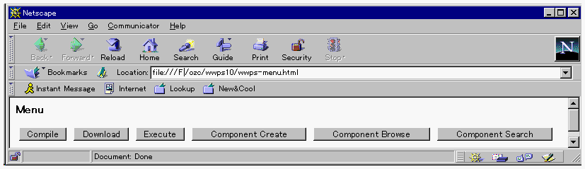

HTML文書のカスタマイズ
ワールドワイドプログラミングサーバのサービスを利用するクライアント側では、HTML文書のカスタマイズが必要です。
- まず$OZHOME/lib/inet/wwps-html.zip を任意の作業場所（ディレクトリ）に展開してください。
- 展開したファイルの中にwwps-menu.htmlという文書があります。その先頭部分にある
base href の値を、利用するワールドワイドプログラミングサーバが稼動するマシンの
oz.cgi を格納したディレクトリに設定します。
wwps-menu.html 
上記の設定を行った wwps-menu.html をWWWブラウザで開くと、既存環境インタフェースの機能を利用することができます。

(c) 1996-1998 IPA, ETL, AT21, FSIABC, FXIS,
InArc, MRI, NUL, SBC, Sharp, TEC, TIS. All rights reserved.